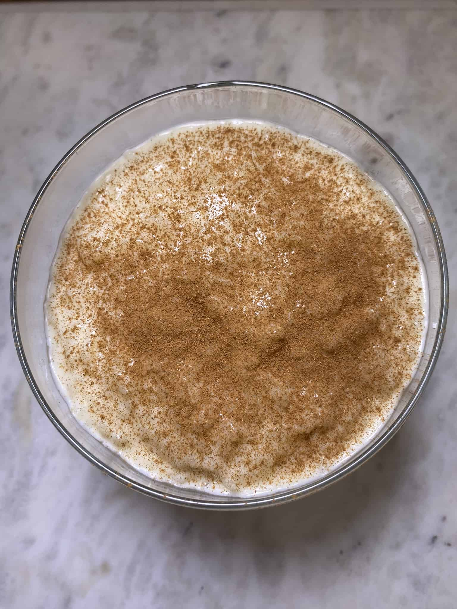

Rizogalo (Greek Rice Pudding)

Description
This is not my original recipe. For the original go to www.allrecipes.com - Rizogalo (Greek Rice Pudding).
This Greek rice pudding is simple, comforting, and delicious. Some people in Greece make it with eggs. This dish is best enjoyed cold, but there is little better than enjoying a warm bowl of rizogalo on a cold day.
Ingredients
- 2 cups water
- ½ cup uncooked short-grain white rice
- 2 1/2 cups whole milk, divided
- 4 tablespoons white sugar
- 4 tablespoons cornstarch
- 1 teaspoon vanilla extract
- ¼ teaspoon ground cinnamon, or more to taste
Steps
- Bring water and rice to a boil in a saucepan. Immediately reduce the heat to medium-low and cook, uncovered and at a slow simmer, stirring occasionally, until soft and most of the water has been absorbed, about 30 minutes.
- Add 2 cups milk and sugar. Increase the heat to high and bring to a boil.
- Stir remaining 1/2 cup milk and cornstarch together in a bowl; add to boiling rice-milk mixture along with vanilla. Stir until well combined, then remove from the heat.
- Ladle into individual serving dishes and sprinkle with cinnamon. Let cool to room temperature, about 30 minutes, then refrigerate until well chilled, at least 4 hours.
Home